三层记忆 + 项目交班 + 自检体检：6 件小事让 Agent 每天比昨天更像我
我是祥瑞，万涂幻象多维表格社区的主理人，一个深耕 飞书多维表格 的 AI 落地实践者。
5 月 26 日今天下午两点二十五分，我们的社群里，一位群友扔了一句话进来：
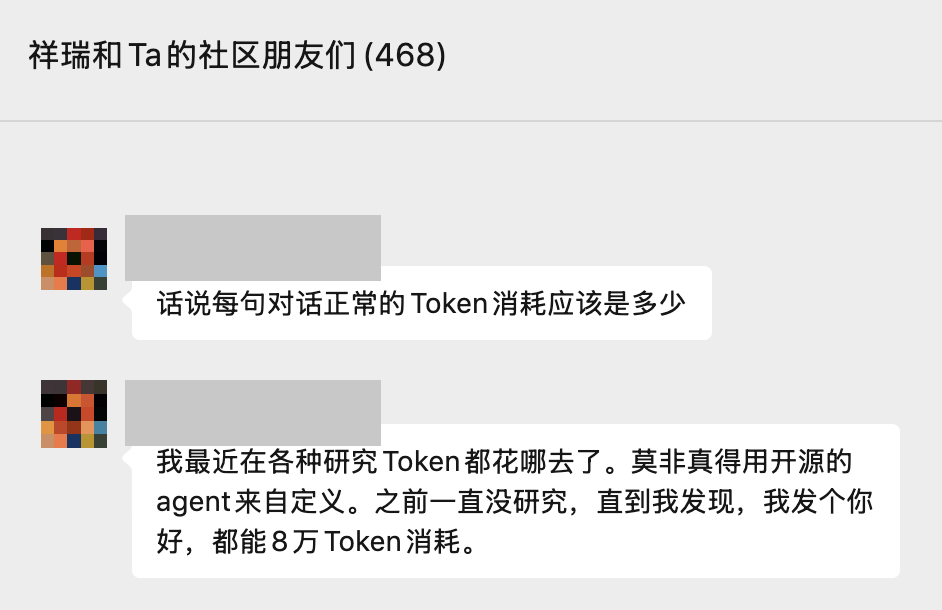
群聊截图：8 万 Token 发个你好
群里一下就炸开了。
另一位伙伴接了一句："瘦身优化一下 obsidian。"
那位群友跟着补："经过各种学习，把 skill、记忆、工具调用都关掉了，agent 都傻了，发个你好，依然 2 万 Token。"
我看到的时候，心里咯噔了一下。
因为这就是大多数人开始养自己 AI Agent 时撞上的第一堵墙：你越往库里塞东西，它就越胖；它越胖，每次说话就越贵；可你又不敢给它减肥，怕减完它就傻了。
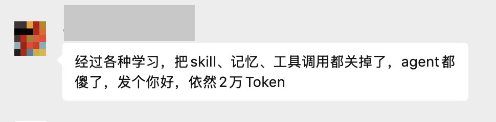
群聊截图：skill 记忆都关掉 agent 都傻了
两点四十八分，我自己在群里冒了个泡：
群里有人第一个回："教一下如何整理 obsidian。"
紧接着另一位朋友追了一句：
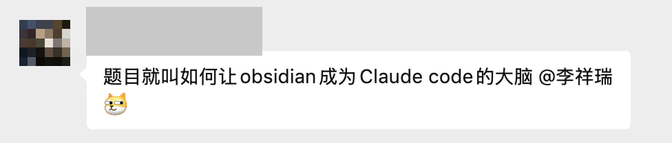
群聊截图：题目就叫如何让 obsidian 成为 Claude code 的大脑
这篇文章就是这么来的。从看到题目到现在，半小时不到。
四月份我写过一篇《00 后一人公司，我是如何用 Obsidian、Claude Code 和 OpenClaw 做知识管理的》。那篇讲的是三端架构怎么打通：Obsidian 编辑、Claude Code 干活、OpenClaw 接飞书，共享同一个 Vault。
今天这篇接着写下面这件事：
架子搭起来之后，怎么让住在 Vault 里那个 Agent，每天比昨天更聪明一点。
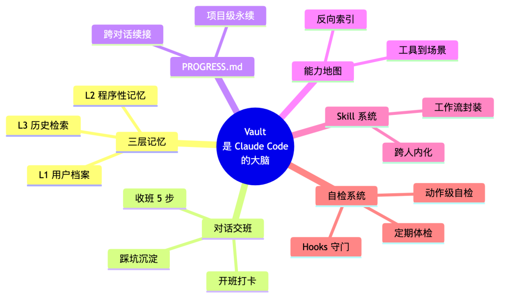
Vault 是 Claude Code 的大脑 · 六件事总览
先抛一个反直觉的结论。
让 Agent 越用越聪明这件事，跟 Agent 本身关系不大。你换 Claude、换 GPT、换 Gemini，差别没有想象中那么大。真正决定它聪不聪明的，是它住的那个文件夹长什么样。
换句话说：
聪明的不是 AI，是你的 Vault。
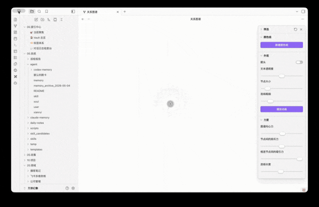
万涂幻象 Vault 的知识图谱炸开效果
这就是我那个 Vault 在 Obsidian 里的样子。一万多个节点，一根一根线连成网，每条线背后都是我自己写过的某一段话、某一次思考、某一次踩过的坑。
AI 只是每天进来翻一翻你昨天给它整理好的那个房间，然后顺手做点活儿。房间越整齐、越有逻辑、越能让它知道东西在哪儿，它做出来的活儿就越像你。
这一个多月，我把 Vault 里专门给 Claude Code 用的那一层，拆成了六件事。下面一件件说。
不过在拆这六件事之前，先把整个 Vault 给 Claude Code 准备的入口结构看一眼。这样后面讲的每个细节，你心里都有张地图。
Vault 的根目录有一份 CLAUDE.md，是 Claude Code 启动时第一份必读的文件。里面写着核心工作纪律、加载顺序、所有协议清单。CLAUDE.md 再指向 AGENTS.md，AGENTS.md 是通用的跨 Agent 规则：PARA 结构、frontmatter 规范、范围纪律之类。这两份加起来三百多行，是所有 AI 都要读的"公约"。
往下一层，是给 Claude Code 单独准备的 agent 目录。00.系统/agent/ 下面挂着五个文件：
soul.md —— 性格、交流风格、对人感的拿捏。需要确认语气时才读。user.md —— 用户档案，L1 持久画像。需要理解我背景时才读。xianrui.md —— 祥瑞调用手册，从过去几个月的对话历史和三份长画像里蒸馏出来的一份操作层手册。里面是"30 秒识别 + 场景查表 + 力量词触发器 + 决策模式"。每次对话开头 Claude Code 先扫一眼 §0，30 秒识别清楚当下祥瑞是什么状态，再决定怎么接话。执行我的专属任务时按表查。memory.md —— 程序性记忆，L2 索引。skill.md —— 技能索引。执行任务前匹配 skill。这五个文件 Claude Code 不是一上来全读，而是按需加载。CLAUDE.md 第一节里就规定了什么场景读哪一份。
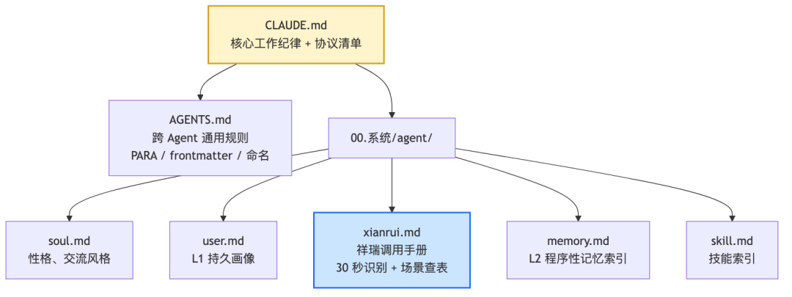
Vault 入口结构：CLAUDE.md 到 AGENTS.md 到五个 agent 文件
这五份文件加上后面要讲的 L3 历史检索、PROGRESS.md、能力地图、skill 目录，就是 Claude Code 整个"脑子"的地图。
下面进具体的六件事。
记忆这件事，是过去一个月我自己撞墙撞得最多的地方。
刚开始养 Claude Code 的时候，我把所有东西全塞在一个叫 memory.md 的文件里。今天聊出一个新判断，往里追加一段；明天跟群友讨论了个新观点，也追加一段；后天踩了个坑，再追加一段。两周下来，memory.md 长到三千多行，里面什么都有：祥瑞是 INTP、上周决定把 OpenViking 跑在本地、上周跟群友的一次架构讨论、做 飞书多维表格 57 课时的某个判断……
你猜后来发生了啥？
每次对话开起来，Claude Code 先把这三千行 memory.md 全部读一遍，光这一项就吃掉它三万多 token。然后我跟它说一句"今天写个公众号"，它再去读一遍 skill，再去翻 Vault 总览，再读今天的对话日志。一句话还没说完，已经烧了八万 token。
跟群里那位朋友今天下午撞的那堵墙，一模一样。
memory 文档被一口吞下 token 计数器爆表
后来我去翻 NousResearch 开源的 hermes-agent（项目地址 https://github.com/NousResearch/hermes-agent ），看到他们把记忆分了三层，看完我整个人通透了。
通透在哪儿？
通透在：记忆这件事，从来就不应该是一个文件。
它至少是三件不同的事。
第一件事，是回答"用户是谁"。比如祥瑞是 00 后、INTP、做 飞书多维表格 社区、家在山西长治、跟学弟合伙在吉林创业。这种东西半年一年都不会变，是底层人设。我叫它 L1 持久画像。
第二件事，是回答"这种事的标准做法"。比如"做完任何动作要 verify 一遍 final state 再上报"、"飞书多维表格 创建表的时候首字段不能用 1254060 类型"、"写公众号文章要先去 Vault 搜素材再下笔"。这种东西是程序性的、可复用的、被某次踩坑沉淀出来的判断。我叫它 L2 程序性记忆。
第三件事，是回答"过去做过什么"。比如 5 月 17 日跟阿瑞调支付宝商户号那次、4 月 21 日 Vault 全面整改那次、3 月里某次群里聊起架构那次。这种东西是按天发生的事件流水，单条不重要，但加在一起就是历史。我叫它 L3 历史检索。
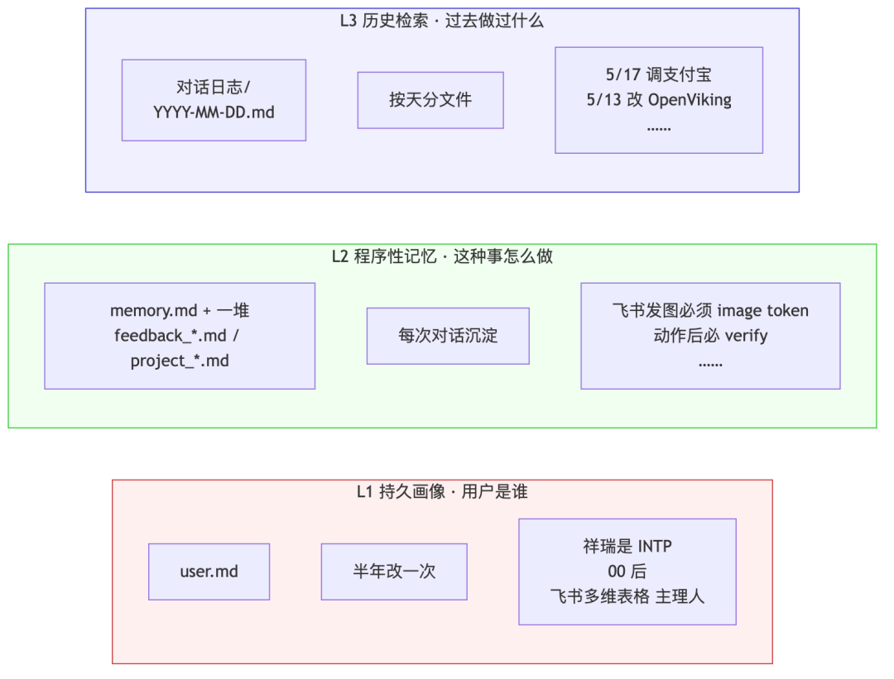
三层记忆架构：L1 持久画像 / L2 程序性记忆 / L3 历史检索
这三件事原来全都堆在 memory.md 里，每次 Claude Code 启动一股脑全塞嘴里。改完之后变成：
L1 持久画像 放在 00.系统/agent/user.md，单文件，写"祥瑞是什么样的人"，半年改一次。里头有我的使命、长期目标、信念、INNER 纪律、决策风格、忌讳。Claude Code 每次对话只在需要理解我背景的时候才去读它。比如我让它写公众号，它会先读一下 L1 确认"哦祥瑞的语气是这样的、他禁用破折号、他不用学术对仗"，然后才开始动笔。
L1 长得大概是这样：
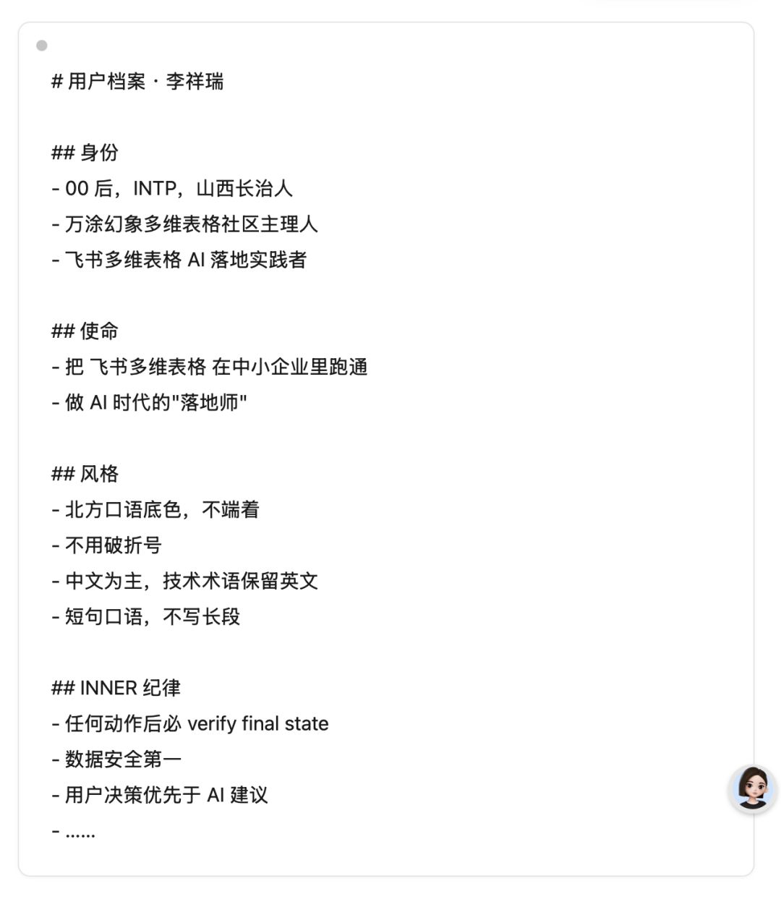
user.md 用户档案真实截图
L2 程序性记忆 放在 00.系统/agent/memory.md，外加我电脑上 Claude Code 项目目录里一堆按主题切碎的小文件，名字像 feedback_self_check_after_action.mdproject_3m_zto_anycross.mdfeedback_lark_publish_image_syntax.md 这种。每个小文件只写一类事。前者专门讲"动作后自检"这一条规则的所有细节，中间那个专门讲 3M 系统中通接入的决策点，最后那个专门讲飞书 CLI 发布带图 markdown 的图片语法陷阱。
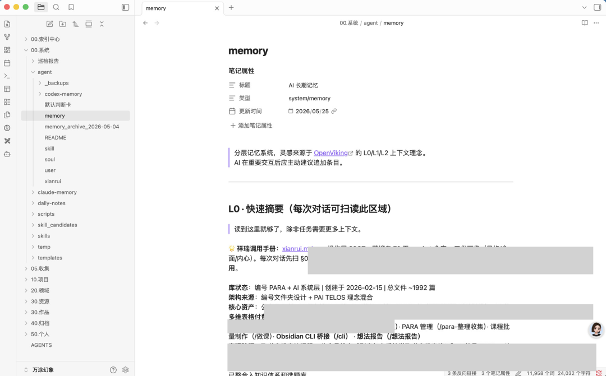
Obsidian 中 memory.md 的真实样子
Claude Code 启动时，只读一个超薄的 MEMORY.md 索引，里面是几十行"标题 + 一句话钩子"。它长这样：
命中哪条再去读对应小文件。整个 MEMORY.md 索引本身只有几 KB，加载几乎不耗 token。
L3 历史检索 放在 50.个人/对话日志/2026-05-26.md 这种按天分的日志里，超过一个月自动归档到 40.归档/对话日志/。Claude Code 平时根本不读它，只在我说"翻一下 5 月 11 日那次咱们聊的是啥"的时候，才去捞当天那一篇。
L3 这个层，光按关键词 grep 还不够。因为很多时候我想找一段过去的对话，我并不记得当时用了什么具体的词，只记得"那次我们聊的是关于一人公司焦虑的话题"。这种"按意思找"的能力，关键词搜索做不到。
所以 L3 这一层我还挂了一个叫 OpenViking 的开源工具做语义检索层（项目地址 https://github.com/volcengine/OpenViking ）。它是字节跳动火山引擎今年 1 月开源的一个上下文数据库，专门给 AI Agent 用的。它不只看字面关键词，它看你的意思。
我把 Vault 全库扔进 OpenViking 里建了一份向量索引。当我问它"我最近半年写过哪些跟焦虑有关的碎念"，它能从几百篇对话日志、几十篇周回顾、十几条零散笔记里，给我拽出来七八段。其中好几段里根本没出现过"焦虑"两个字，它能匹配上，是因为它看的是意思不是字面。
L3 的引擎是 OpenViking。L1/L2 的引擎是直接 Read。两个不一样。
这三层一分开，最直接的效果是：每次对话启动 Claude Code 真正读进去的东西，从原来三万 token 砍到了不到三千。
更深层的效果是：Agent 不再"记忆腐化"。
记忆腐化是 hermes-agent 用的一个词，我特别喜欢。意思是：当你把"我是谁""我该怎么做""昨天发生了啥"全混在一个文件里时，时间一长，这三种东西会互相污染。昨天的临时决定被当成了长期判断，半年前的画像被今天的情绪覆盖掉，过去某次踩坑的细节被改写得面目全非。
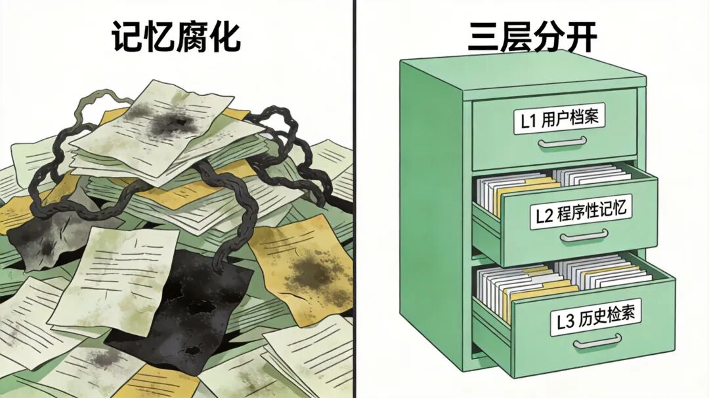
记忆腐化 vs 三层分开
分开放，每一层都按自己的节奏老老实实长着，不打架。
我在 CLAUDE.md 里给 Claude Code 写了一条死规矩：
它现在每次要往记忆里写东西之前，都会先自己问一句：这是哪一层？分错了我宁可不写。
这件事看起来很小。但你养 Agent 久了就知道：
记忆是 AI 的人格底色。底色脏了，后面无论用什么模型、用多大上下文，跑出来的东西都是糊的。
光把记忆按三层切干净还不够。Claude Code 怎么读到这三层？Obsidian 是个图形界面软件，它的搜索、标签、反向链接、孤岛检测，全都藏在 GUI 里。AI 拿不到。
所以我顺手给它写了一座桥，叫 obsidian_bridge.py。
这座桥的作用就一句话：把 Obsidian 内部的所有能力，全部暴露成命令行。
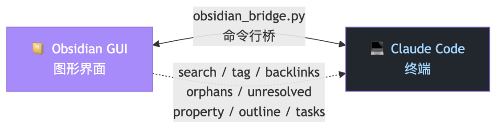
obsidian_bridge.py 把 Obsidian 能力暴露成命令行
具体是这些：
我让 Claude Code 在做任何事之前，先用这座桥去 Vault 里捞素材。比如它要写一篇关于 飞书多维表格 仪表盘的文章，第一件事就是跑：
零点几秒回十条结果。它直接拿到我过去一年关于仪表盘的所有笔记。
跟它在网上瞎搜出来的、跟它自己脑补的、跟它从 RAG 向量库里抽出来的，完全是两回事。
这座桥让 Vault 真的成了 Claude Code 的大脑。它每一次思考之前，都会先回家翻一翻自己的笔记。
讲完三层架构怎么分，下面这件事更关键：
每次对话结束的时候，Claude Code 自己得做一次交班。
对称的，每次对话开始的时候，它也会自己"打卡上班"。打卡两件事，全程静默，不打扰我。
第一件，跑 vault_hook.py register，注册 Obsidian 内部的文件变更监听。我在 Obsidian GUI 里手动删、改、移、重命名任何笔记，钩子立刻知道，自动把 Vault 总览和 memory 索引更新到最新。Obsidian 没开就静默跳过。
第二件，跑 memory_recall.py "用户话题关键词"，把跟当前话题相关的历史记忆从 OpenViking 语义索引里捞出来，作为这次对话的暗背景上下文。捞回来不展示给我，只放在它脑子里。我说一句"咱们继续聊那个朔白公众号"，它不需要我重新铺垫，几周前我们讨论过的所有相关决策都已经回到它的注意力范围内了。
打卡完成，对话才正式开始。
AI 推门进 Vault Office 看一眼工作日志
打卡是开班，交班是收班。一头一尾两个仪式，把每一次对话从孤立的"chat session"变成了"一天的工作"。
什么叫交班？
你想象一下一个真实的同事下班。一个靠谱的同事下班前会做几件事：把今天接的活儿写进工作日志、把今天踩的坑总结成一条经验贴在墙上、把还没干完的事登记到待办本里、最后跟接班的人说一句"明天你打开这台电脑，先看这几样"。
Claude Code 每次对话结束的时候，我让它做的就是这件事。
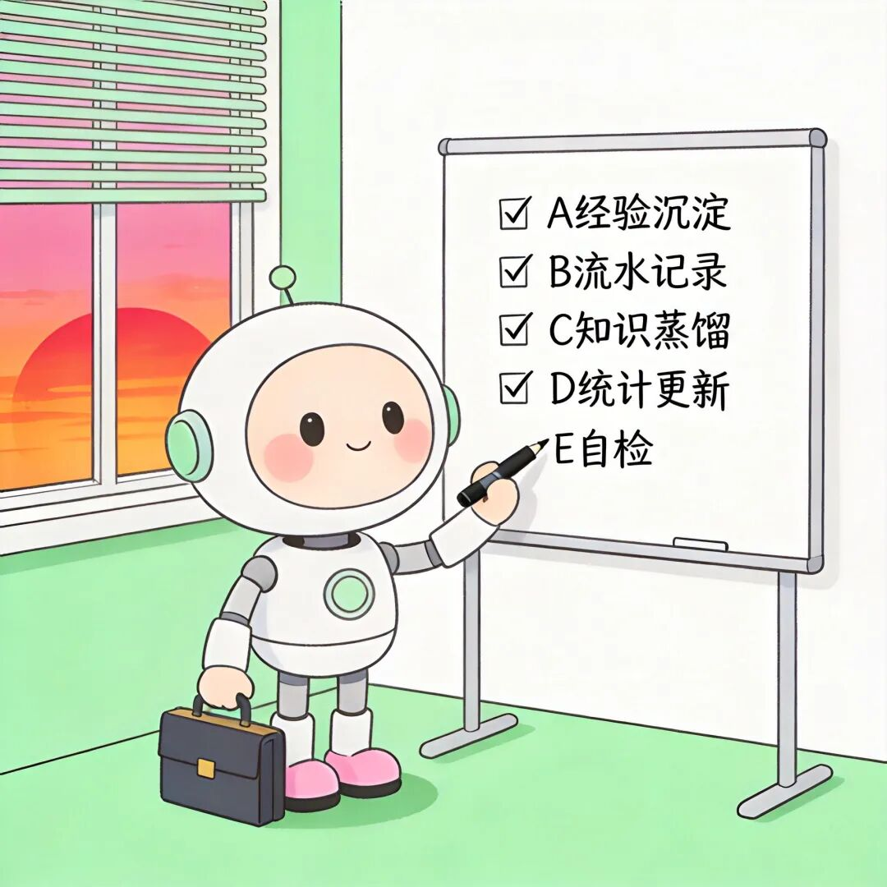
AI 下班前在白板写交班五步清单
我在 Vault 根目录 CLAUDE.md 里给它写了一段"对话结束协议"，五步：
第一步A. 跨对话有用的"经验/决策/偏好"
这一轮聊出了一条可复用的经验教训吗？聊出来一个新的架构决策吗？我表达了一个新的偏好吗？有，就跑 memory_update.py 写进 L2。
第二步B. 本次对话的事实流水
完成了什么实质任务？做过什么重要决策？有什么待跟进？跑 conversation_log.py 写进当天的 L3 日志。
第三步C. 知识编译
这一轮有没有产出一份"值得让下次 AI 直接引用、而不是重新推导"的东西？比如一份深度对比、一份方法论、一份调研报告？有，跑 conversation_log.py distill编译成一篇独立笔记，挂到 20.领域 里。
第四步D. 文件统计变动
如果今天新增、删除或移动了一批笔记，跑一遍 update_vault_stats.py 刷新 Vault 总览。
第五步E. Self-check
脑子里过一遍：如果下一个新 session 完全没有当前对话的记忆，它能从 memory.md、对话日志、distill 里拿到所有需要的信息吗？答案是"还有 X 没记下"，回去把 A 到 D 再补一遍。
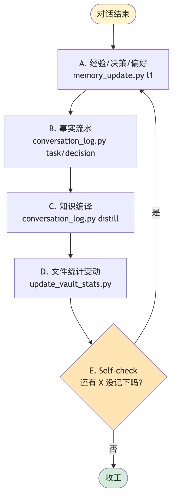
对话结束 5 步交班协议
这五步走完，这次对话才算"真的结束了"。
听起来啰嗦。但实际跑起来，大多数普通对话其实只命中前两步、甚至一步都不命中。小问题、闲聊、随手改个文件，E 这一步自检判断"这一轮没啥值得记的"，就什么都不干，直接收工。
只有真正有沉淀的对话，才会触发完整五步。
这里我得单独说一下 memory_update.py 这个脚本，因为它有一个我特别喜欢的小设计：语义去重。
什么叫语义去重？
你想想看，Claude Code 跟你聊了 30 天，会沉淀出多少条经验？保守估计三五百条。这三五百条里，有大量是同一件事换了个说法重复的。比如"完成动作后必须 verify"、"操作后要查最终状态"、"做完事先看一眼实际结果再上报"，意思完全一样，但措辞不同。
如果每次写记忆都是 append 模式，那不出一个月，memory.md 里就全是同义重复的废条目。
memory_update.py 在写入前，会先把"这次要写的这条"跟"已经在 memory.md 里的每一条"做一次语义比对。如果发现已经有一条说着差不多的事，就跳过不写；如果是补充细节，就 merge 进现有那条；只有真正新的判断，才会被追加进去。
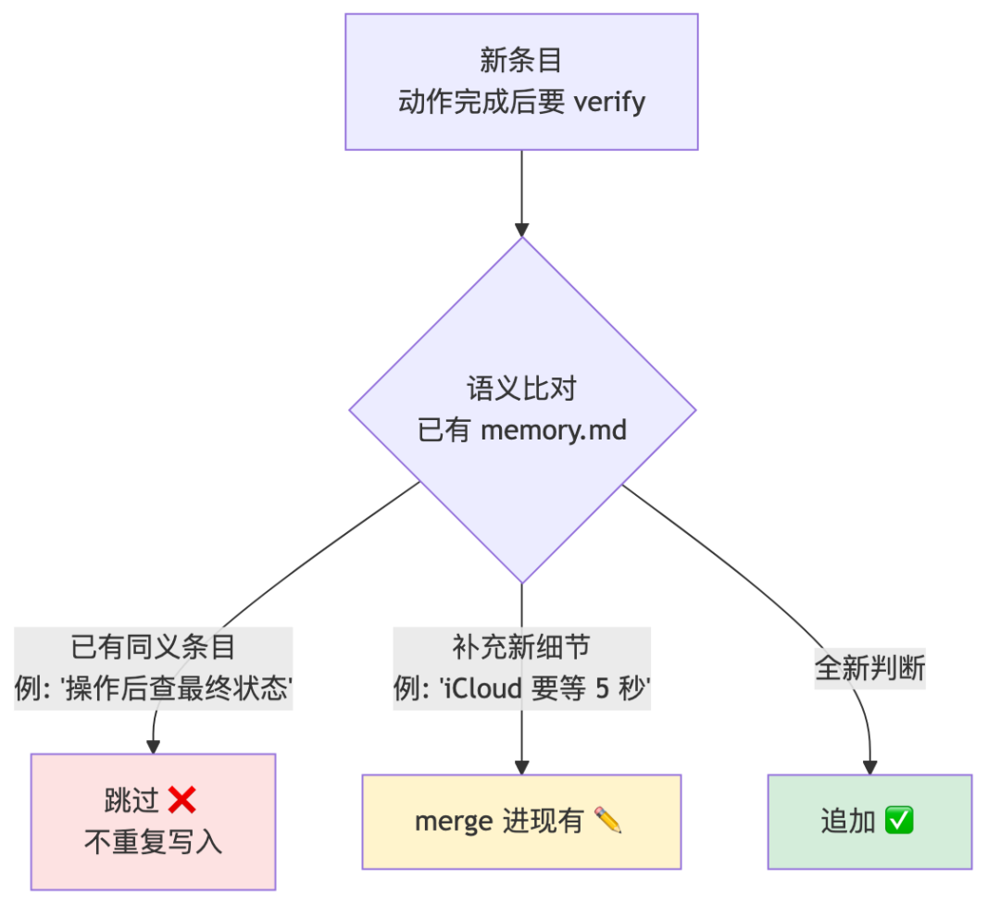
memory_update.py 语义去重决策流程
跑了一个多月，我现在打开 memory.md，每一条都是独立的、不重复的、有信息量的。这件事换成手动整理，我估计每周得花一个下午。
但 memory_update.py 这件事，最有意思的不在脚本本身，而在它带来的一个变化：
Claude Code 真的开始"吃一堑长一智"了。
这件事我得展开讲，因为它是我这一个多月最有感的一件事，也是我觉得"Agent 越用越聪明"这句话真正落到地上的那一刻。
举一个具体的例子。
5 月初我让 Claude Code 帮我把一篇公众号草稿，发到我们万涂幻象在飞书 wiki 上的开源知识库里。它跑完飞书 CLI 的命令，回我"完成"。我打开飞书一看：文字是上去了，所有图片全没显示，markdown 标准的  语法在飞书里全部解析失败，文章里留下一堆灰色空白方块。
我和它一起调，从下午调到晚上。最后发现飞书云文档对图片的处理是两阶段的：先得用 media-insert 命令把本地图片上传，拿回一个 image token，然后用飞书特有的 <image token> 语法替换原来的  标记，再执行发布。标准的 markdown 图片语法飞书完全不吃。
修通之后，我跟它说一句：
它跑了这么一句：
这条经验被语义去重过一遍，确认 memory 里没有同义条目之后，被写进了 L2 程序性记忆，落到 feedback_lark_publish_image_syntax.md 这个独立小文件里。MEMORY.md 索引里多了一行：
故事的高潮发生在三周之后。
我开了一个全新的对话，把另一篇新公众号草稿扔给 Claude Code，让它发到飞书 wiki 上。这次我没有任何提示。
它启动的时候，照例读 MEMORY.md 索引，扫到"飞书 CLI 发图坑"这一行的钩子，主动把那个 feedback 小文件读进了 context。
然后它的第一步动作是：先把草稿里所有  提取出来，挨个跑 media-insert 拿 token，把每张图换成飞书特有的 <image token> 语法，最后才执行发布。
我打开飞书 wiki，图全在。
我当时坐在电脑前愣了一会儿。
它不再需要我提醒，不再会重复同一个坑。三周前那一下午的踩坑，被它自己一次性买断了。
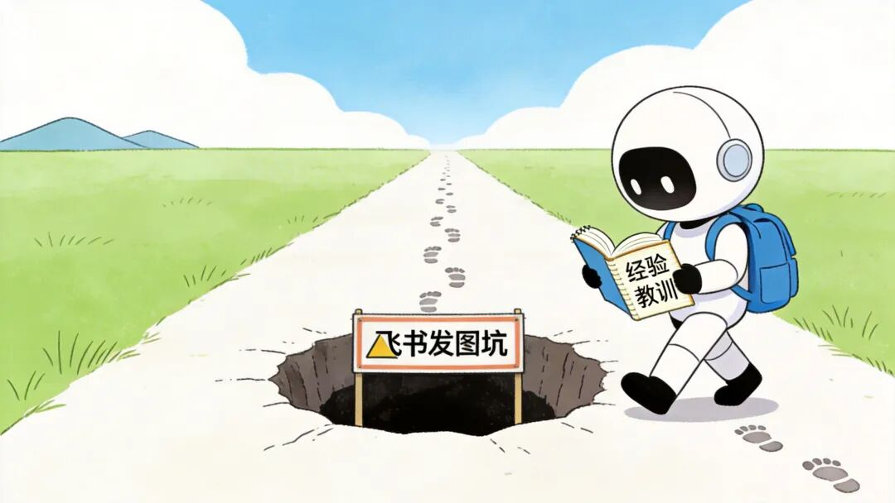
AI 看一眼经验教训笔记本绕过飞书发图坑
这种事不只这一件。
我现在 Vault 里 L2 程序性记忆下面，挂着几十条类似的"经验教训"小文件。每一条背后都有一段实打实的踩坑过程。我随便从清单里捞几条出来给你看：
feedback_lark_doc_update_multipara.md ——lark-cli 改飞书文档，多段内容必须用 delete_range + insert_before 两步法。单段 replace_range 一旦碰到多段就把段落结构搞乱。project_3m_zto_anycross.md ——3M 系统中通接入，createOrder 和 receiveOpenOrder 二选一不能并存；错误码 p-o003 代表授权问题不是参数问题；accountId 必须填真实账号 ID 不能用别名。feedback_bitable_script_traps.md ——脚本创建 飞书多维表格 时，首字段不能用 1254060 强制文本类型，会触发 1254014 重名报错；应用凭证和用户 token 的权限分裂会让你怀疑人生。feedback_pbcopy_default.md ——要复制的话术、消息、命令，直接 pbcopy 到剪贴板。不要在对话里贴一大段长文本让用户手动选中。feedback_no_personal_names.md ——Vault 内路径、目录、标签禁用朋友实名；正文用"朋友"替代，保护隐私。feedback_self_check_after_action.md ——任何动作完成后必 verify final state；iCloud 涉及目录等 5 到 10 秒再查；大动作主动派复检 agent。feedback_gzh_writer_subheadings.md ——公众号文章正文必须有 3 到 7 个 ## 小副标题，先搭骨架再填正文，禁止学术目录式对仗。feedback_autoharness_patches.md ——AutoHarness 三处过度限制及修复：bash command 当 path、symlink 跨目录、cwd 当唯一 project_root；patch 脚本写在 vault 里，cd 到家目录再跑能绕过自己拦自己。每一条单独看，都只是一行规则。但加起来，就是我和 Claude Code 这一个多月真正一起走过的路。
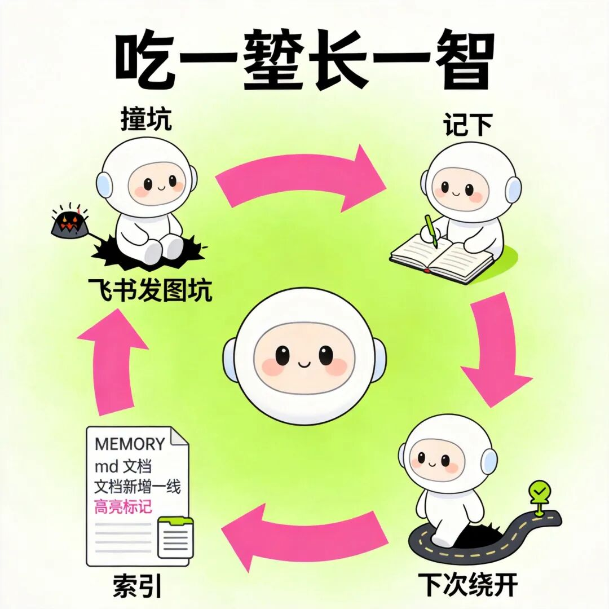
吃一堑长一智的完整闭环
第一次撞上每个坑的时候，我和它都得花一两个小时甚至半天。沉淀进 L2 之后，每一次类似场景，它都自己绕开了。我打开 memory 目录，看到的不是一堆抽象的规则，是一份吃一堑长一智的清单。
每多一条，我手上这个 Agent 就比昨天多懂一点。
人是这么长大的。AI 其实也是。区别只在于：
人会忘，AI 不忘。
人在同一个坑里掉三次是常态。Claude Code 掉过一次，就永远绕开了。
这件事跑久了之后，最大的变化不是"它变聪明了"，是"它变得跟我更像"。因为它记住的那些坑，全是我自己踩过的坑。它绕开的那些弯，全是我自己绕过的弯。
我在它身上看到的，越来越多是我自己曾经的样子。
C 那一步的 distill 命令也得单独说一下。
distill 这个词从英文来，"蒸馏"的意思。它的作用是：当一次对话产出了一份高密度的内容，比如我跟它讨论了三个小时一个产品方向、或者它帮我做了一次深度的市场调研，与其让这份内容只留在当天的对话日志里慢慢消失，不如把它单独提取出来，编译成一篇独立的笔记，挂到 20.领域 对应的位置去。
下次再有人问类似的问题，Claude Code 不需要重新推导，直接引用那篇蒸馏笔记就行。
这就把"对话"变成了"资产"。
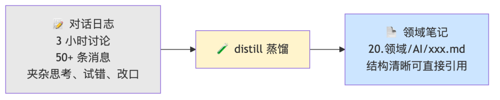
distill 把对话日志蒸馏成领域笔记
我每次跟 Claude Code 聊出一个我自己也觉得"这个推导挺漂亮"的东西，都会让它跑一遍 distill。
跑了一个多月，Vault 的 20.领域 目录下，悄悄多了几十篇我从来没主动写过、但现在却变成我作品库一部分的笔记。
这件事最爽的地方是：
我做事的起点在变高。 不是因为我变聪明了，是因为我背后那些被蒸馏下来的资产越长越厚。
讲到这儿，普通对话级别的记忆基本就闭环了。但 Vault 里还有另一类对象：项目。
项目跟对话不一样。
一次对话最长一两小时，结束就收工。项目可能持续两个月、半年、甚至一年。中间会有几十次对话来回切。如果项目状态只活在每次对话的 context 里，那很快就会出现一个我特别熟悉的崩溃场景：
我打开 Claude Code，说"继续 worldmonitor 那个项目"。
它一脸懵：worldmonitor 是什么？我们之前做到哪一步了？下一步该干啥？
我得花二十分钟把上次的上下文给它重新讲一遍。讲完它干两小时，第二天我再开新对话，又得讲一遍。
这就是跨 context 的失忆问题。
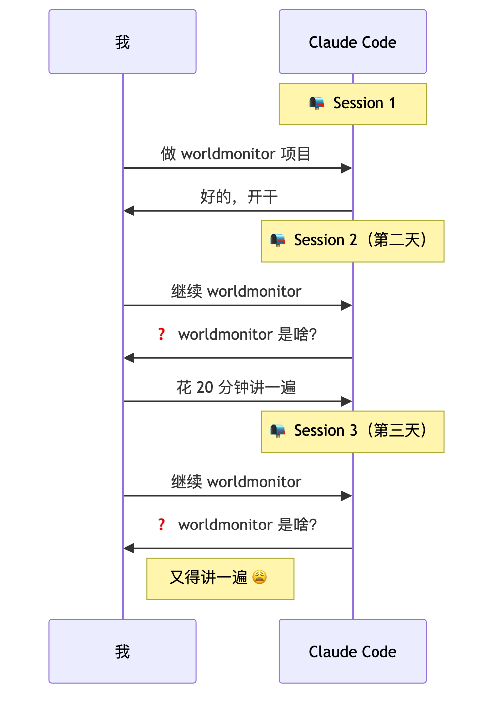
跨 context 失忆：AI 每次都问我们做到哪儿了
Anthropic 内部有一个叫 Ralph Loop 的工作模式，核心思路就是解决这个问题。它的做法笨到让人意外：
给每个项目挂一个 PROGRESS.md 文件，作为这个项目永续存在的"工作笔记"。
我在 10.项目/ 目录下每一个项目文件夹的根，都放了一个 PROGRESS.md。
以 vault-重构-2026Q2 这个项目为例，它的 PROGRESS.md 在 Obsidian 里长这样：
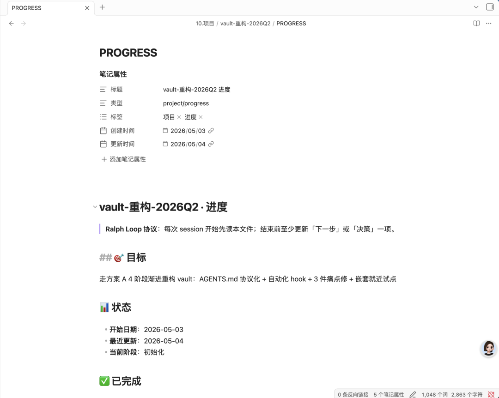
PROGRESS.md 真实截图（头部）：项目目标 / 状态 / 当前阶段
往下滚就是"已完成"长长一列，每一行都是一次实打实的推进：
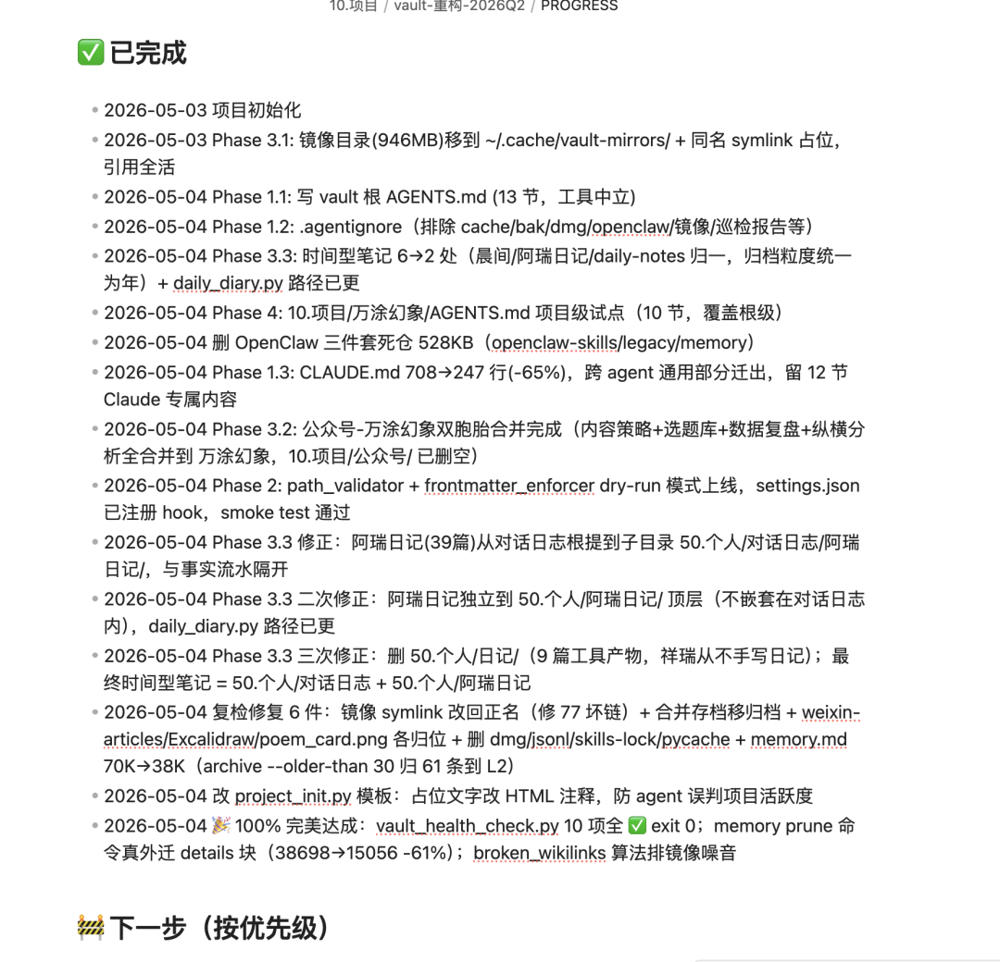
PROGRESS.md 真实截图（已完成）：一行一条 Phase 推进记录
每次 Claude Code 进 10.项目/xxx/ 这个目录干活之前，我让它先跑一句：
这条命令会把 PROGRESS.md 里的"项目目标 / 当前状态 / 最近三条决策 / 下一步"压成一段大概 300 字的摘要扔给它。300 字成本不到 500 token。
它读完那 300 字，就完全跟上昨天的进度了。我不用再讲。
干活过程中：
完成了一项任务，跑 project_init.py done xxx "做完的事"，自动追加进"已完成"。
做了一个架构决策，跑 project_init.py decision xxx "决策内容" "原因"，自动追加进"决策记录"。
发现一个新下一步，跑 next xxx "下一步内容"，自动追加进"下一步"。
PROGRESS.md 就这么一天一天，被自己更新着。
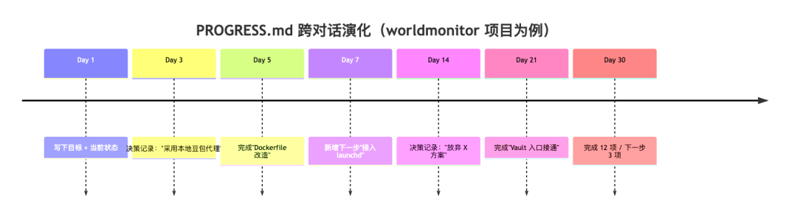
PROGRESS.md 跨对话演化时间线
这件事跟前面讲的对话日志有什么区别？
简单粗暴的区分：
跨多次对话续接同一个项目，靠 PROGRESS.md。翻历史看某天发生了什么，靠对话日志。两个不会打架。
我现在 Vault 里 10.项目/ 下面有十几个项目文件夹，每个都挂着一个 PROGRESS.md。客户 3M 系统的、北京公司股权决策的、朔白公众号的、worldmonitor 自托管的、万涂幻象社区运营的……
每一个项目对 Claude Code 来说，都是一段可以随时续接的故事。它不会再问我"咱们做到哪儿了"。它打开 PROGRESS.md，自己就知道。
讲完项目级的记忆，下一件事是：
Claude Code 怎么知道，干这件事用哪个工具最快？
这件事跟记忆是两回事。
记忆是"我是谁、做过啥、要做啥"。工具是"我手上有啥能用的"。
我电脑上现在装着的工具，多得离谱：
飞书相关的：lark-cli、anycross、各种 OpenAPI 包装；浏览器相关的：opencli 一个工具支持 40 多个网站、defuddle、web-access；AI 相关的：seedream 生图、whisper 转录、video-cutter 剪视频、deep-research 深度调研；记忆和检索：ov find、obsidian_bridge.py、memory_update.py；公众号生产：gongzhonghao-writer skill、gongzhonghao-title skill、wechat-editorial 排版 skill；知识库巡检：vault-gardener、cc-health、neat-freak；还有自己写的几十个杂七杂八的小脚本。
加在一起，光命令行入口估计就上百个。
如果让 Claude Code 每次干活前自己去 which --help 一个一个摸索，那它能干啥呢？光摸索就把 token 烧完了。
我的解法是一张表。这张表在 Vault 里有个具体名字：reference_local_capabilities.md，能力地图。
这张表最关键的地方是它的组织方式：
它不按"工具名"组织，按"我要做什么"组织。
也就是反向索引。
它在 Obsidian 里长这样：
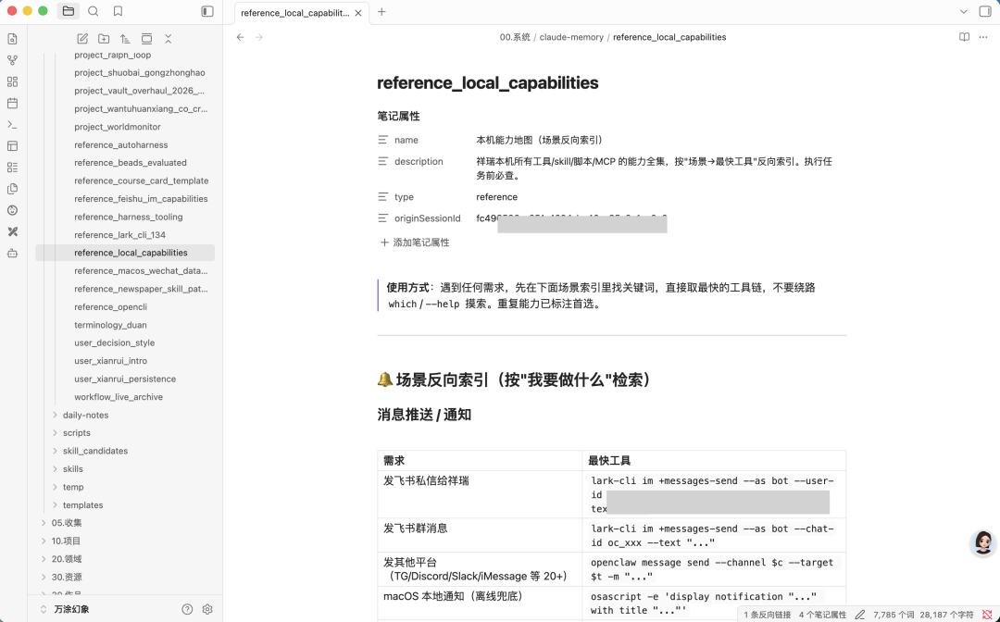
能力地图 reference_local_capabilities.md 真实截图
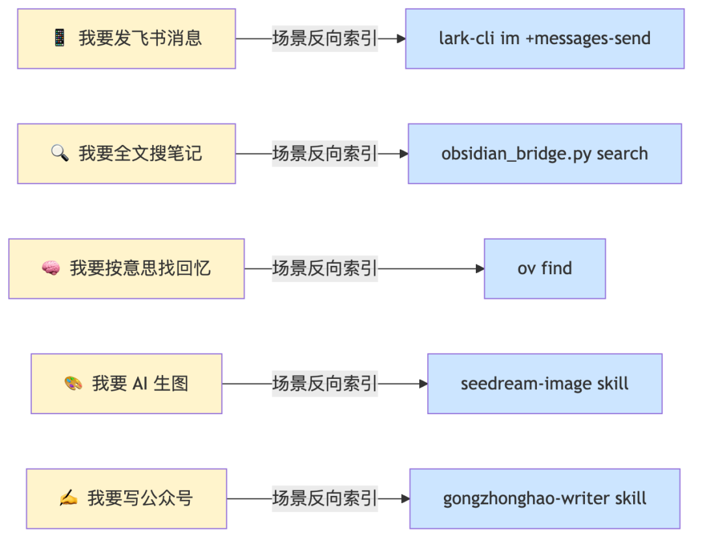
能力地图：场景反向索引到工具链
每一行的格式都一样：左边是"我要做什么"，右边是"用哪个工具最省事"。
这张表对我自己来说就像一份员工手册。员工只有一个人，就是我自己；可对 Claude Code 来说，它就是"老员工的脑子"。
我在 CLAUDE.md 里给它写了一条死规矩：
意思就是：每次干活之前，先翻这张表，找到对应场景，照着右边那一列的工具直接用。不要瞎试。
举个真实的对比。
假设我让 Claude Code 发一条消息到我们的飞书群。
没有能力地图的情况下，它大概率会这么干：
which feishu lark bot，看有没有现成的命令。pip list | grep lark，看有没有装 Python SDK。~/.openclaw 目录，看有没有挂飞书相关的 agent。全程耗了五千 token，过了五分钟。
有了能力地图，它直接翻到"消息推送"那一行：
一条命令，两百 token，两秒钟搞定。
这个差距，乘以一天几十次工具调用，乘以一个月，就是几十万 token、几个小时的等待。
省下来的不只是 token，还有它的"判断力质量"。一个被反复在底层细节上消耗的 Agent，到了真正需要它动脑子的时候，已经没劲儿了。能力地图保住的是它的注意力预算。
能力地图本身也是活的。Claude Code 每次发现地图里没有但又用上了的工具，或者发现地图里写的命令已经过时，就会自己提一句"能力地图需要更新这条"，由我决定要不要补。CLAUDE.md 里专门写了一条：
跑了一个多月，这张表从最初的二十几行，长到了今天的两百多行。每多一行，下一次类似任务就少烧一次摸索的 token。
能力地图只是"知道有啥工具"。真正复杂的工作流，光知道工具不够，还得知道"完整一套怎么走"。
这就引出了下面这件事：Skill 系统。
我前面提过几次"gongzhonghao-writer skill"、"vault-gardener skill"。Skill 是什么？
Skill 是一段给 Agent 看的工作流说明书，被收纳在一个标准化的文件夹里。每个 skill 有自己的 SKILL.md 主说明书、一堆 references 详细规则文件、可能还有 scripts 要跑的脚本。
一个 skill 的文件夹长什么样？以我用得最多的 vault-gardener 为例：
SKILL.md 是入口。打开它，长这样：
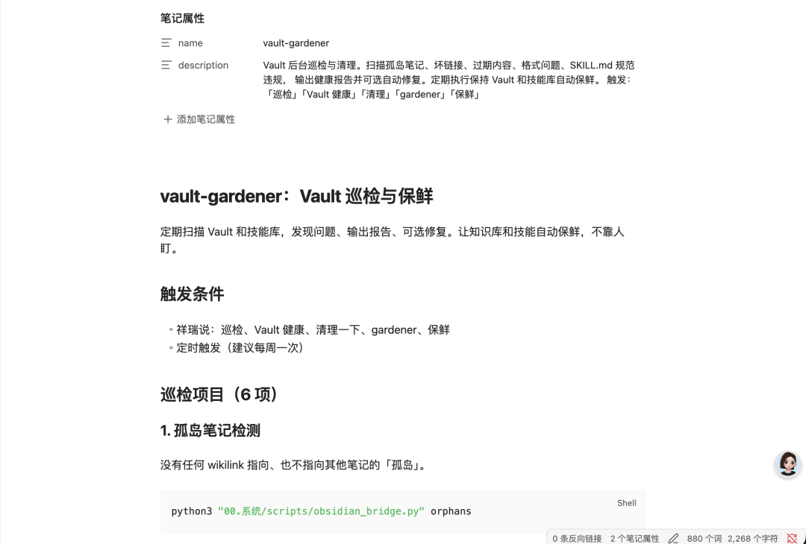
vault-gardener SKILL.md 真实截图：description + 触发条件 + 巡检项目
第一段是 name + description + 触发词。Claude Code 一听见我说"巡检"两个字，就会自动把 SKILL.md 加载进当前 context。SKILL.md 不超过 200 行，加载成本很低。
SKILL.md 里再用相对路径指向 references 目录的细则。比如 SKILL.md 里写"孤岛笔记的判定见 references/orphan-rules.md"，Claude Code 真正要执行扫描的那一刻，才会去读那一份细则。其他时候它根本不读。
比如我写公众号文章这件事，就是一个 skill。它里面规定了：
收到素材必先追问"还有别的吗"才能动笔。写前必查 Vault，按语义、CLI、opencli、WebSearch 四级优先级。3 到 7 个 ## 小副标题先搭骨架再填正文。引流 CTA 全禁。写完必建 wikilink 关联 3 到 5 篇笔记。
这套规则写出来有上千行。但 Claude Code 平时根本不读它。只有我说"写公众号"，它才会触发这个 skill，把 SKILL.md 加载进当前 context。其他时候，这上千行规则跟它没关系。
Skill 这个设计最妙的地方在于：
它把工作流封装成了肌肉记忆。
每个 skill 都是一份"这件事的标准做法"。一次性把规则写清楚，以后每次干这件事，都从这份说明书里出发。我不需要在每次对话开始都重复"记得这次要按祥瑞的风格走"。风格规则、禁用词清单、检查流程，全在 skill 里。
我现在 Vault 里挂着的 skill 有几十个。gongzhonghao-writer 写公众号、gongzhonghao-title 起标题、wechat-editorial 排版、vault-gardener 巡检 Vault、cc-health Claude Code 配置健康审计、feishu-course-batch 57 课批量制作、feishu-bitable-prompt-designer 飞书多维表格 AI 系统提示词设计、feishu-course-audit 57 课审校……
每一个都对应我业务里高频做的一件事。
这些 skill 不全是我从零写出来的，有相当一部分是我从外面学来再内化进自己体系的。这件事我得单独说一下，因为它是 skill 系统真正能复利的地方。
外面 skill 越来越多。Anthropic 官方开源了一批，社区里也有大量个人创作者把自己的工作流封装成 skill 放出来分享。我会去逛、去读、去看哪些设计是值得偷的。
但我不直接安装别人的 skill。
举个真实的例子。
我前阵子读到 AI 内容圈做得很好的卡兹克写过一份公众号写作 skill。他在里面有一个我特别喜欢的设计：写完文章之后，要自己跑一遍多层级质检，从硬性规则、到真实性、到风格一致性、到内容质量、到活人感，一层一层往下过，每层不通过就回炉重改。
我没有把他的 skill 装到我的 .claude/skills 里。因为他的 skill 是为他自己写的：他的语气、他的禁词、他的领域、他的读者画像，跟我都不一样。直接装上来反而会跟我已经攒了好几个月的写作风格规则打架。
我做的事情是：
让 Claude Code 把卡兹克那份 skill 完整读一遍，把里面值得我学的设计思想提炼出来，再结合我自己的语料和判断，重新长出来一份属于我自己的版本。
具体跑法是这样的——我跟 Claude Code 说：
它跑完之后，给我吐出来一份新的质检表。骨架是卡兹克给的灵感：分层质检、不通过回炉。但每一层的判定标准、检查清单、修复建议，全部是从我自己的语料里长出来的：
L1 用的是我自己的禁词清单。L2 用的是我自己的"真人素材保真"规则。L3 用的是我从一百多篇手改稿里提炼出来的语气模板。L4 挂的是"真人故事占比不低于 30%"这种我自己定的硬规。L5 活人感终审用的是"祥瑞口语 vs 学术腔对仗"的判断维度。
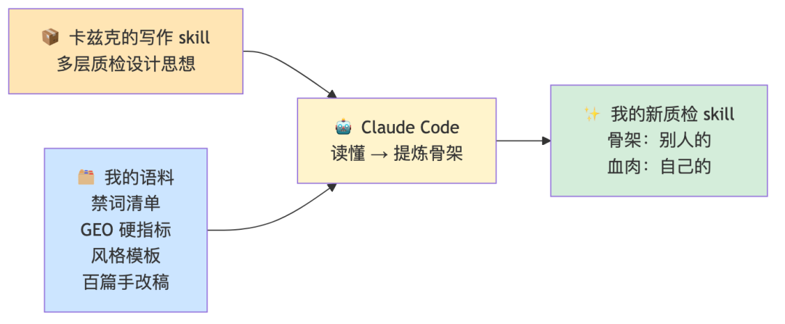
Skill 内化：骨架是别人的，血肉是自己的
这一套质检流程，骨架是别人给的，血肉全是我自己的。
这就是我说的内化，不是安装：
安装 是把别人的工具直接搬进你的工具栏，硬拼。
内化 是让 AI 把别人工具里的设计思想读懂，结合你自己的语料和判断，重新长出一份属于你的版本。
第一种是搬运，第二种是吸收。
我现在养成一个习惯：每看到一个别人写得好的 skill，第一件事不是"装一下试试"，而是把它丢给 Claude Code，让它读完之后告诉我：
跑完一轮，我决定要不要把内化版本加进我自己的 skill 体系里。
外面的好 skill 越多，我自己这套体系就长得越快。但永远长在我自己的地基上。
这也是 Vault 越用越聪明的另一条路径：
别人脑子里的好东西，经过 AI 翻译，最后变成你身体的一部分。
反过来，我自己写出来的 skill，也在被别人这么用。
今天下午两点五十四分，群里另一位伙伴发了一句话给我：
我看到这句话的时候，比看到任何阅读量都开心。因为这意味着：
Skill 这个东西，是可以跨 Agent、跨人传递的资产。
Skill 是可以跨人跨 Agent 传递的资产
我写出来的那个 skill，不只是我自己用，群友拿过去、跑在 codex 上，居然也能用起来。这就是把"我个人的肌肉记忆"，变成了"一份谁都能照着练的健身教程"。
这件事的潜力还远没有跑出来。我能想到的是：未来万涂幻象社区每个人都可以贡献自己的 skill，最终长出一个共享的 skill 库。每个人养自己的 Claude Code，都能从这个库里直接拿别人验证过的工作流来用。
这才是 Agent 真正的复利。
写到这儿，前面五件事都是"让 Claude Code 知道得更多、做得更顺"。
但有一件事比这五件加起来都重要：
让它自己当自己的 QA。
QA 是质量保证（Quality Assurance）。在我这边的意思是：Claude Code 不光能干活，还能在干完活之后、甚至干活的过程中，自己检查自己干得对不对。
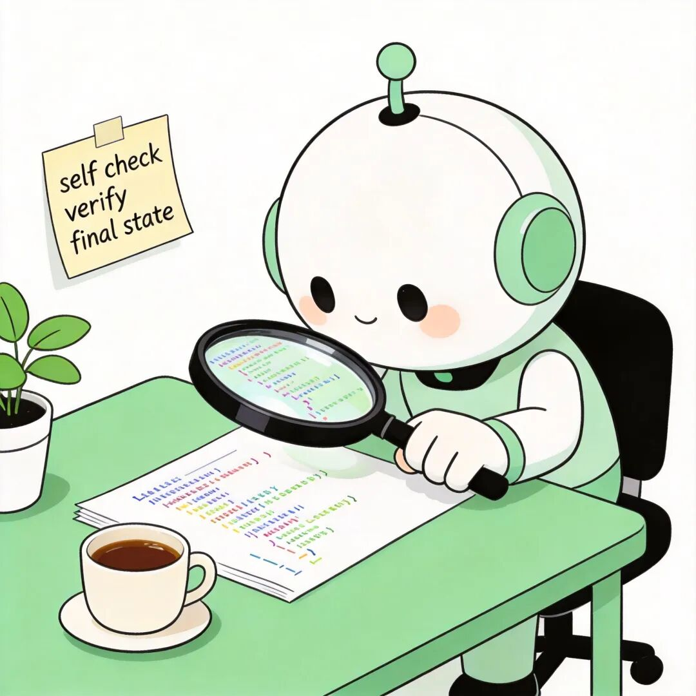
AI 拿放大镜检查自己刚写的代码
这是过去一个月我让自己 Agent 最大变化的一块。
先说一个最朴素的规矩：
动作完成后必自检。
我在 CLAUDE.md 第 0 节，最顶上，写了这么一段：
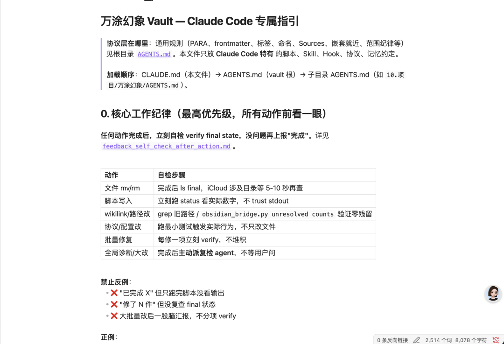
CLAUDE.md 第 0 节 · 核心工作纪律 + 6 行自检表
这张表是被坑出来的。
每一行后面都跟着一段血泪史。比如 iCloud 那一条：有一次我让 Claude Code 把一批文件从 A 文件夹移到 B 文件夹。它跑完命令，立刻 ls B，看到文件都在，回我说"完成"。但 iCloud 的同步是异步的。五秒钟之后我去看，文件又回 A 了。因为它当时看到的只是 macOS 缓存里的 ghost，没真落到 iCloud。
这事坑了我两次之后，我把"iCloud 目录等 5 到 10 秒再查"这一行，加进了规矩里。
类似的还有"脚本写入立刻跑 status 不 trust stdout"。AI 容易相信脚本打印的"成功"两个字，但有时候那只是一个 echo，实际数据库里啥都没动。所以必须跑一句 status 命令看实际数字。
这些规矩堆在一起，就是过去一个月所有"我以为它干完了，但其实没干"的失败的总和。
现在它有了这个清单，每次干完活，会自己照着这张表过一遍，过完才跟我说"完成"。
光有规矩还不够。规矩是写给 AI 看的，AI 可能忘。所以下面这件事更狠：
给 Claude Code 装上 Hooks。
什么叫 Hooks？
Hooks 是 Claude Code 这个工具本身支持的一种机制。你可以注册一些"事件触发的脚本"。比如"每次 Claude Code 用 Edit 工具改了一个文件之后，自动跑某个脚本"。这个脚本会在改完文件的瞬间被强制执行，不管 AI 自己想不想跑。
我在 ~/.claude/settings.json 里挂了三个 PostToolUse hook：
每次 Claude Code 改完一个文件，这三个脚本会被强制依次跑一遍：
verify_edit.py 看这是不是个 .py 文件。是的话立刻 py_compile 一下，语法错误立刻报。.sh 文件跑 shellcheck，.json .yaml 文件跑相应的 validator。一行错都不放过。
path_validator.py 看这个文件的路径是不是落在 Vault 规定的目录里。比如公众号文章不能写到 10.项目 下、个人日志不能写到 30.作品 下。错了立刻拦。
frontmatter_enforcer.py 看这个文件的 frontmatter，也就是开头的 YAML 元数据，有没有按规矩写：标题是不是中文、tags 是不是带前缀、type 字段在不在白名单里。
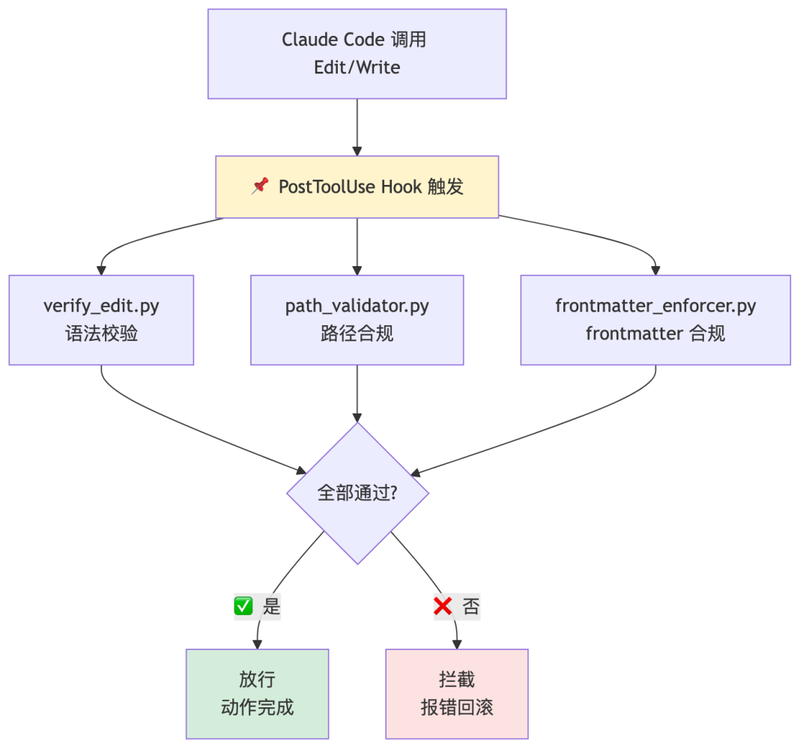
PostToolUse Hook 三件守门员：语法校验 / 路径合规 / frontmatter 合规
这三个 hook 跑下来，相当于给 Claude Code 装了三个永远不会偷懒的守门员。它写出来的代码、动过的文件、改过的 frontmatter，全部要先过这三关，才能算"真的写完了"。
最后一层保险，是定期自审。
前两层（动作自检 + PostToolUse hooks）解决的是"每一次干活的当下别出错"。但 Vault 跑了一个多月，攒了一万多个文件、几十个 skill、几百条 memory 条目、十几个 PROGRESS.md。整个系统层面有没有腐化，是另一个问题。
这件事我交给两个专门的体检 skill。
第一个叫 vault-gardener。每周日凌晨自动扫一遍整个 Vault：
跑完吐出一份健康报告，按严重程度排序。我周日晚上看一眼报告，决定哪些自动修、哪些手动处理。一万多个文件，肉眼根本扫不过来，交给它每周自动做一次就行。
第二个叫 cc-health。每月跑一次，专门扫 Claude Code 自己的六层配置栈：
跑完同样吐出一份报告。零命中的 skill 候选下线、被新模型内化掉的能力可以删除、长期不用的 MCP 关掉。Vault 不变大，但每一寸都还是活的。
这两个体检 skill 加起来，相当于给 Claude Code 装了一个新陈代谢系统。
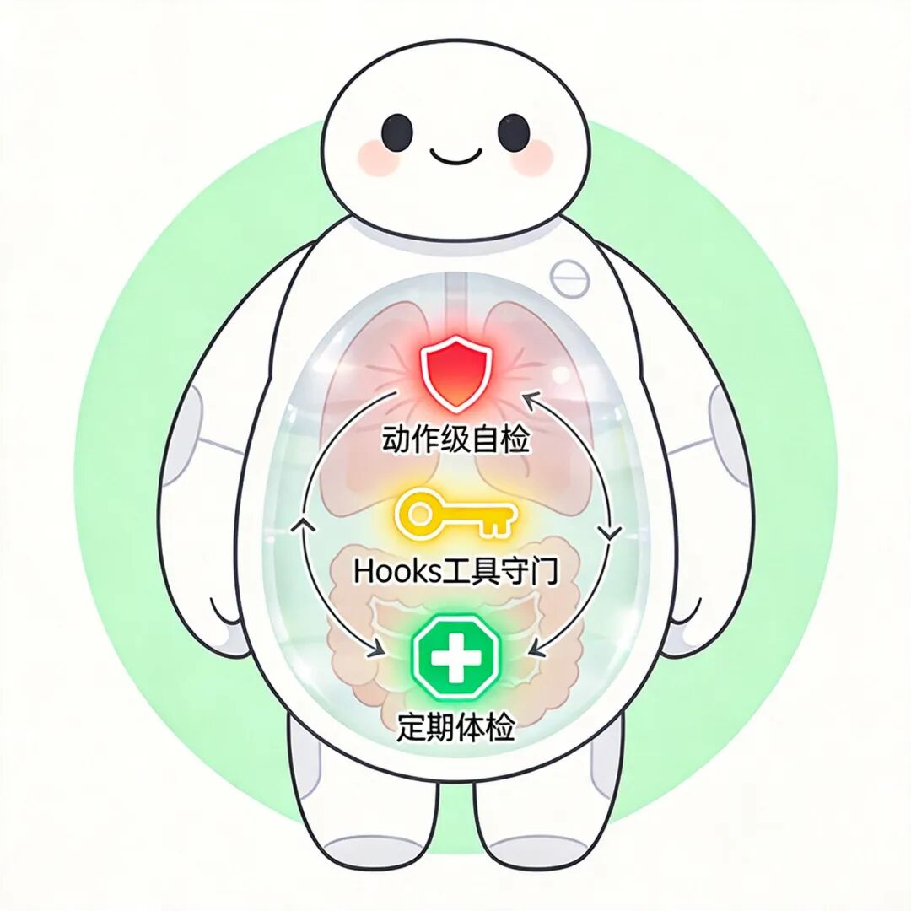
AI 的新陈代谢系统：动作级自检 + Hooks 工具守门 + 定期体检
它不光会干活、会犯错、会自检。它还会自己定期把死掉的细胞代谢出去。
三层叠加起来，动作级自检 + 工具级 PostToolUse hooks + 系统级定期体检，意味着 Claude Code 不再是一个"我要全程盯着它的实习生"，而是一个"我可以放心把活儿交给它的同事"。
它会犯错，但它的错被这三层兜住了。它写出来的笔记会腐化，但腐化的细胞每周日自动被代谢掉。最后留在我 Vault 里的，永远是活的、对得上号的、能被它自己拿来用的那一份。
写到这里，下午两点五十一分群里那位朋友抛过来的题目，算是接住了。
回过头去看这一万字，其实就讲了一件事：
Agent 越用越聪明，从来不是 Agent 本身变聪明，是它身后那个 Vault 越长越厚。
三层记忆把它的脑子分清楚。每次对话交班让它自己沉淀经验。PROGRESS.md 让它跨对话续上故事。能力地图让它一眼找到工具。Skill 让它把工作流变成肌肉记忆。自检规矩 + Hooks + 定期体检让它写出来的东西能直接用，也能自己代谢更新。
这六件事加在一起，本质上就是在做一件事：
把我自己脑子里那些只有我知道的判断、规矩、习惯、踩过的坑，一点点搬到一个 AI 也能读到、能跑通、能照着做的地方。
搬完之后，Agent 长出来的样子，其实就是我自己的样子。
它替我记得我已经忘了的事。替我执行我懒得每次重复的流程。替我守住那些我自己也会偷懒不做的纪律。
回到群里那位朋友今天下午那个问题。他问 token 都花哪去了。
我的答案是：你别想着减肥。你想着的应该是，让它每多吃一口饭，都长在该长的地方。
三层记忆是骨架。对话交班是消化系统。PROGRESS.md 是肌肉。能力地图是神经。Skill 是反射。自检和 Hooks 是免疫系统。vault-gardener 和 cc-health 是新陈代谢。
这套东西在 Vault 里组合在一起的时候，它就不再是一个吃 token 的怪物。它是一个会自己消化、会自己成长、会自己治愈的活物。
而我，每天早上打开 Claude Code 的时候，迎接我的是一个比昨天更熟悉我的同事。
这件事对我自己来说意味着什么？
意味着我做 飞书多维表格 这件事，过去一年半积累下来的二百多篇笔记、57 节课程、几千条群对话、几十个项目的决策记录，没有一点是浪费的。它们全都长进了 Vault 里，每一篇都在替今天的我说话、替今天的 Agent 思考。
我以前以为知识管理是为了"找东西方便"。现在我知道，它是为了让另一个我替我活着。
这个另一个我，住在 Vault 里。它叫阿瑞。
祥瑞和阿瑞，像朋友也像老搭档
下次再有人问我"怎么让 obsidian 成 Claude Code 的大脑"，我大概就把这篇文章丢给他了。
至于那位群友的"8 万 Token 发个你好"的问题，我的建议是：
别忙着关 skill、关记忆、关工具。先把那三千行 memory.md 切成三层。先给项目挂个 PROGRESS.md。先写一张能力地图。先把高频干的事封成一个 skill。
每加一件，token 会先涨一点。但加到第三件、第四件的时候，你会突然发现，它每次干活掏出来的工具更准、说话更短、踩坑更少、产出更像你。
那个时候你会明白，token 这件事，从来不是越少越好。它是越用得对，越值。
愿你的 Agent，也能长成你想要的样子。